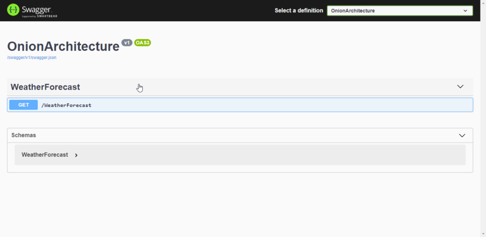

This describes Onion Architecture as used by the Freight Rate Prototype and it’s advantages. We will also together build a WebApi that follows a variant of Onion Architecture so that we get to see why it is important to implement such an architecture in your upcoming projects. You can find the source code of this implementation on GitHub.
Note
This is a very detailed page covering various aspects of Onion Architecture.
The need to follow Architecture¶
To maintain structural Sanity in Mid to Larger Solutions, it is always recommended to follow some kind of architecture. You must have seen most of the Open Sourced Projects having multiple layers of Projects within a complex folder structure.
Layers vs Tiers¶
When there is just a logical separation in your application, we can term it as layers or N Layers. In cases where there is both a physical and logical separation of concerns, it is often referred to as n-tiered application where n is the number of separations. 3 is the most common value of N. In this article, we will deal with the Layered Architecture.
This layering can help in the separation of concerns, subdividing the solution into smaller units so that each unit is responsible for a specific task and also to take advantage of abstraction. For mid to larger scaled projects where multiple teams work, layering has very obvious advantages up its sleeves. It lets a specific team or individual work on a particular layer without disturbing the integrity of the others. It makes it much easier to track changes using source control.
Also, It just makes your entire solution look clean.
Before getting into Onion Architecture in ASP.NET Core, let’s first refresh our knowledge on N Layer Architecture.
Brief Overview of N-Layer Architecture¶
Let’s look at the one of the most popular Architecture in ASP.NET Core Applications. Here is a simple diagramatic representation of a variation of the N-Layer Architecture. Presentation Layer usualy holds the Part that the User can interact with, i.e, WebApi, MVC, Webforms and so on. Business Logic is probably the most important part of this entire setup. It holds all the logics related to the Business Requirement. Now, every application ideally has it’s own dedicated Database. Inorder to access the Database, we introduce a Data Access Layer. This layer usually holds ORMs for ASP.NET to fetch/write to the database.

Disadvantages of N-Layer Architecture¶
To clearly understand the advantages of Onion Architecture in ASP.NET Core Applications, we will need to study the issues with N Layer Architecture. It is one of the commonly used Solution Architecture amongst .NET developers.
Instead of building a highly decoupled structure, we often end up with several layers that are depending on each other. This is something really bad in building scalable applications and may pose issues with the growth of the codebase. To keep it clear, in the above diagram we can see that the presentation layer depends on the logics layer, which in turn depends on the data access and so on.
Thus, we would be creating a bunch of unnecessary couplings. Is it really needed? In most of the cases the UI (presentation) layer would be coupled to the Data Access Layers as well. This would defeat the purpose of having a clean architecture, yeah?
In N Layer Architecture, the Database is usually the Core of the Entire Application, i.e It is the only layer that doesn’t have to depend on anything else. Any small change in the Business Logics layer or Data access layer may prove dangerous to the integrity of the entire application.
Getting Started with Onion Architecture¶
The Onion architecture, introduced by Jeffrey Palermo, overcomes the issues of the layered architecture with great ease. With Onion Architecture, the game-changer is that the Domain Layer (Entities and Validation Rules that are common to the business case ) is at the Core of the Entire Application. This means higher flexibility and lesser coupling. In this approach, we can see that all the Layers are dependent only on the Core Layers.

Here is how I would breakdown the structure of the proposed Solution.
Domain and Application Layer will be at the center of the design. We can refer to these layers at the Core Layers. These layers will not depend on any other layers.
Domain Layer usually contains enterprise logic and entities. Application Layer would have Interfaces and types. The main difference is that The Domain Layer will have the types that are common to the entire enterprise, hence can be shared across other solutions as well. But the Application Layer has Application-specific types and interface. Understand?
As mentioned earlier, the Core Layers will never depend on any other layer. Therefore what we do is that we create interfaces in the Application Layer and these interfaces get implemented in the external layers. This is also known and DIP or Dependency Inversion Principle.
For example, If your application want’s to send a mail, We define an IMailService in the Application Layer and Implement it outside the Core Layers. Using DIP, it is easily possible to switch the implementations. This helps build scalable applications.
Presentation Layer is where you would Ideally want to put the Project that the User can Access. This can be a WebApi, Mvc Project, etc.
Infrastructure Layer is a bit more tricky. It is where you would want to add your Infrastructure. Infrastructure can be anything. Maybe an Entity Framework Core Layer for Accessing the DB, or a Layer specifically made to generate JWT Tokens for Authentication or even a Hangfire Layer. You will understand more when we start Implementing Onion Architecture in ASP.NET Core WebApi Project.
Implementing Onion Architecture in ASP.NET Core WebApi Project¶
To keep things simple but demonstrate the architecture to the fullest, we will build an ASP.NET Core Web API that is quite scalable. For this article, Let’s have a WebApi that has just one entity, Product. We will perform CRUD Operations on it while using the Onion architecture. This will give you quite a clear picture.
Here is a list of features and tech we will be using for this setup.
- Onion Architecture
- Entity Framework Core
- .NET Core 3.1 Library / .NET Standard 2.1 Library / ASP.NET Core 3.1 WebApi
- Swagger
- CQRS / Mediator Pattern using MediatR Library
- Wrapper Class for Responses
- CRUD Operations
- Inverted Dependencies
- API Versioning
Setting up the Solution Structure¶
We will start off by creating a Blank Solution on Visual Studio.

Let’s give it a proper Name.

Under the Blank Solution, add 3 new folders.
- Core – will contain the Domain and Application layer Projects
- Infrastructure – will include any projects related to the Infrastructure of the ASP.NET Core 3.1 Web Api (Authentication, Persistence etc)
- Presentation – The Projects that are linked to the UI or API . In our case, this folder will hold the API Project.

Let’s start adding the required projects. Firstly, under Core Folder Add a new .NET Standard Library and name it Domain.
Why .NET Standard? We know that Domain and Application Project does not depend on any other layers. Also the fact that these projects can be shared with other solutions if needed (Maybe another solution that is not .NET Core, but .NET Framework 4.7) . Get the point?

Note
A wise person once said – “Delete the Default Class1 Created by Visual Studio. Always Delete them.”
After creating the Domain project, right click on properties and change the target framework to .NET Standard 2.1 (which is the latest .NET Standard version at the time of writing this article.)

Similary, create another .NET Standard Library Project in the Core Folder. Name it Application. Do not forget to change the target version here as well.
Next, let’s go to the Infrastructure Folder and add a layer for Database, (EFCore). This is going to be a .NET Core Library Project. We will name it Persistence.

Finally, in the Presentation layer, add a new ASP.NET Core 3.1 WebApi Project and name it WebApi.

This is what we will be having right now. You can see the clear seperation of concerns as we have read earlier. Let’s start build up the architecture now.

Adding Swagger To WebApi Project¶
Tip #1
Always use Swagger while working with WebApis. It is so much helpful to have it.
Install the Following packages ot the WebApi Project via Package Manager Console
Install-Package Swashbuckle.AspNetCore
Install-Package Swashbuckle.AspNetCore.Swagger
We will have to register Swager within the application service container. Navigate to ../Startup.cs and add these lines to the ConfigureServices method.
#region Swagger
services.AddSwaggerGen(c =>
{
c.IncludeXmlComments(string.Format(@"{0}\OnionArchitecture.xml", System.AppDomain.CurrentDomain.BaseDirectory));
c.SwaggerDoc("v1", new OpenApiInfo
{
Version = "v1",
Title = "OnionArchitecture",
});
});
#endregion
Then, add these lines to the Configure method.
#region Swagger
// Enable middleware to serve generated Swagger as a JSON endpoint.
app.UseSwagger();
// Enable middleware to serve swagger-ui (HTML, JS, CSS, etc.),
// specifying the Swagger JSON endpoint.
app.UseSwaggerUI(c =>
{
c.SwaggerEndpoint("/swagger/v1/swagger.json", "OnionArchitecture");
});
#endregion
Next, we will need to add the XML File (For Swagger Documentaion). To do this, right click the WebApi Project and go to propeties. In the Build Tab enable the XML Documentation file and give an appropriate file name and location. I have added the xml file to the root of the API Project.

Make sure that the WebApi Project is selected as the Startup Project. Now Build / Run the Application and navigate to ../swagger. We have got swagger up and running.
{kind=link}
Tip #2
While running the application, you would see that it navigated to ../weatherforecast by default. This is because of launchSettings.json settings. In the WebApi Project, Properties drill down, you can find a launchsettings.json file. This file holds all the configuration required for the app launch. Change the launch URL to swagger. Thus, swagger will open up by default every time you run the application. This helps you save some time.

Adding The Entities to the Domain Project¶
Now, let’s work on the Core Layers starting from the Domain Project. So what is the function of the Domain Layer? It basically has the models/entities, Exception, validation rules, Settings, and anything that is quite common throughout the solution.
Let’s start by adding a BaseEntity class at Common/BaseEntity.cs in the Domain Project. This abstract class will be used as a base class for our entities.
public abstract class BaseEntity
{
public int Id { get; set; }
}
Now add a Product Class that inherits the Id from the BaseEntity. Create a new class Entities/Product.cs in the Domain Project.
public class Product : BaseEntity
{
public string Name { get; set; }
public string Barcode { get; set; }
public string Description { get; set; }
public decimal Rate { get; set; }
}
Adding the Required Interfaces And Packages in Application Layer¶
As mentioned earlier, the Application Layer will contain the Interfaces and Types that are specific for this Application.
Firstly, Add Reference to the Domain Project.
Then, install the required packages via Console.
Install-Package MediatR.Extensions.Microsoft.DependencyInjection
Install-Package Microsoft.EntityFrameworkCore
We have a Entity named Product. Now we need to establish this class as a Table using Entity Framework Core. So we will need a ApplicationDBContext. But the catch is that, we won’t create the actual concrete implementation of the ApplicationDbContext here in the Application Layer. Rather, we will just add a IApplicatoinDbContext Interface so that the EF Logics does not fall under the Application Layer, but goes to the Persistence layer which is outside the core,
This is how you can invert the dependencies to build scalable applications. Now , the advantage is that, tommorow, you need a different implementation of the ApplicationDbContext, you don’t need to touch the existing code base, but just add another Infrastructure layer for this purpose and implement the IApplicationDbContext. As simple as that.
Create a new folder Interfaces in the Application Project. Add a new interface in it, IApplicationDbContext
public interface IApplicationDbContext
{
DbSet<Product> Products { get; set; }
Task<int> SaveChanges();
}
This is another variant that i have noticed in many huge solutions. Let’s say you have around 100 interfaces and 100 implementations. Do you add all this 100 lines of code to the Startup.cs to register them in the container? That would be insane in the maintainability point of view. To keep things clean, what we can do is, Create a DependencyInjection static Class for every layer of the solution and only add the corresponding . required services to the corresponding Class.
In this way, we are decentralizing the code lines and keeping our Startup class neat and tidy. Here is an extension method over the IServiceCollection.
public static class DependencyInjection
{
public static void AddApplication(this IServiceCollection services)
{
services.AddMediatR(Assembly.GetExecutingAssembly());
}
}
Here we will just Add Mediator to the service collection. We will implement Mediator pattern later in this tutorial.
And all you have to do in the WebApi’s Startup class in just add one line. This essentially registers all the services associated with the Application Layer into the container. Quite handy, yeah?
services.AddApplication();
Implementing MediatR for CRUD Operations¶
In Application Layer, Create a New Folder called Features. This will have all the logics related to each Feature / Entity. Under this folder, add a new one and name it ProductFeatures. Then add a Commands and Queries folder to it.
I have already written a detailed article on MediatR and CQRS pattern in ASP.NET Core 3.1 WebApi Project. You can follow that article and add the Required Commands and Handlers to the Application Layer.

I will add the links to the source code of each file. Basically these 5 Classes would cover our CRUD Operations implementation. Make sure that you have gone through my article about CQRS for ASP.NET Core before proceeding.
- CreateCommand
- DeleteCommand
- UpdateCommand
- GetAllQuery
- GetByIdQuery
Setting Up EF Core on the Persistence Project¶
Firstly, add a connection string to the appsettings.json found in the WebApi Project.
"ConnectionStrings": {
"DefaultConnection": "Server=(localdb)\\mssqllocaldb;Database=onionDb;Trusted_Connection=True;MultipleActiveResultSets=true"
}
With the CRUD logics out of the ways, let’s setup EFCore in the Persistence Layer and try to generate a database. Install the following packages to the Persistence Project.
Install-Package Microsoft.EntityFrameworkCore
Install-Package Microsoft.EntityFrameworkCore.SqlServer
Remember we created an IApplicationDBContext Interface in the Application Layer? This is where we will be implementing it. Create a new folder named Context and add a new class ApplicationDbContext. This class will implement IApplicationDBContext.
public class ApplicationDbContext : DbContext, IApplicationDbContext
{
public ApplicationDbContext(DbContextOptions<ApplicationDbContext> options)
: base(options)
{
}
public DbSet<Product> Products { get; set; }
public async Task<int> SaveChanges()
{
return await base.SaveChangesAsync();
}
}
We will have to register IApplicationDBContext and bind it to ApplicationDbContext, right? Similar to the Application layer, we will have to create a new class just to register the dependencies and services of this layer to the service container.
Add a new static class, DependencyInjection
public static class DependencyInjection
{
public static void AddPersistence(this IServiceCollection services, IConfiguration configuration)
{
services.AddDbContext<ApplicationDbContext>(options =>
options.UseSqlServer(
configuration.GetConnectionString("DefaultConnection"),
b => b.MigrationsAssembly(typeof(ApplicationDbContext).Assembly.FullName)));
services.AddScoped<IApplicationDbContext>(provider => provider.GetService<ApplicationDbContext>());
}
}
And in the Startup class/ ConfigureServices method of the WebApi Just Add the following line. You can now see the advantage of this kind of approach.
services.AddPersistence(Configuration);
Generate the Migrations and the Database¶
As our ApplicationDbContext is configured, let’s generate the migrations and ultimately create a Database using Ef Core Tools – Code First Approach.
Install the following packages in the WebApi Project.
Install-Package Microsoft.EntityFrameworkCore.Tools
Install-Package Microsoft.EntityFrameworkCore.Design
Now, open up the package manager console and select the Persistence project as the default prject (as mentioned in the sceenshot below.). This is because the actual ApplicationDBContext is implemented in the Persistence layer, remember?
Then, run the following commands to add migrations and to generate / update the database.
add-migration Initial
update-database
{kind=link}
You will get a ‘Done’ message.
Adding API Versioning¶
Just to make our solution a bit more clean, let’s also add API Versioning to the WebAPI.
I have written a detailed article on API Versioning in ASP.NET Core 3.1 WebApi. Feel feel to read it to get a complete idea of this concept.
Install the required package.
Install-Package Microsoft.AspNetCore.Mvc.Versioning
In the Startup/ConfigureServices of the API project, add these lines to register the Versioning.
#region API Versioning
// Add API Versioning to the Project
services.AddApiVersioning(config =>
{
// Specify the default API Version as 1.0
config.DefaultApiVersion = new ApiVersion(1, 0);
// If the client hasn't specified the API version in the request, use the default API version number
config.AssumeDefaultVersionWhenUnspecified = true;
// Advertise the API versions supported for the particular endpoint
config.ReportApiVersions = true;
});
#endregion
Setting up the Controllers¶
This is the final step of setting up Onion Architecture In ASP.NET Core. We will have to wire up a controller to the Application Layer.
Create a Base Api Controller. This will be an Empty API Controller which will have Api Versioning enabled in the Attribute and also a MediatR object. What is aim of this Base Controller? It is just to reduce the lines of code. Say, we add a new controller. We will not have to re-define the API Versioning route nor the Mediatr object. But we will just add the BaseAPI Controller as the base class. Get it? I will show it in implementation.
Add new Empty API Controller in the Controllers folder and name it BaseApiController.
using MediatR;
using Microsoft.AspNetCore.Http;
using Microsoft.AspNetCore.Mvc;
using Microsoft.Extensions.DependencyInjection;
namespace WebApi.Controllers
{
[ApiController]
[Route("api/v{version:apiVersion}/[controller]")]
public abstract class BaseApiController : ControllerBase
{
private IMediator _mediator;
protected IMediator Mediator => _mediator ??= HttpContext.RequestServices.GetService<IMediator>();
}
}
You can see that we are adding the API Versioning data to the route attribute and also creating a IMediator object.
Next, let’s create our actual ENtity endpoint. Create a new folder inside the Controllers folder and name it ‘v1’. This means that this folder will contain all the Version 1 API Controllers. Read more about API Versioning to understand the need for this here.
Inside the v1 Folder, add a new empty API Controller named ProductController. Since this is a very basic controller that calls the mediator object, I will not go in deep. However, I have previously written a detailed article on CQRS implementation in ASP.NET Core 3.1 API. You could go through that article which covers the same scenario. Read it here.
[ApiVersion("1.0")]
public class ProductController : BaseApiController
{
/// <summary>
/// Creates a New Product.
/// </summary>
/// <param name="command"></param>
/// <returns></returns>
[HttpPost]
public async Task<IActionResult> Create(CreateProductCommand command)
{
return Ok(await Mediator.Send(command));
}
/// <summary>
/// Gets all Products.
/// </summary>
/// <returns></returns>
[HttpGet]
public async Task<IActionResult> GetAll()
{
return Ok(await Mediator.Send(new GetAllProductsQuery()));
}
/// <summary>
/// Gets Product Entity by Id.
/// </summary>
/// <param name="id"></param>
/// <returns></returns>
[HttpGet("{id}")]
public async Task<IActionResult> GetById(int id)
{
return Ok(await Mediator.Send(new GetProductByIdQuery { Id = id }));
}
/// <summary>
/// Deletes Product Entity based on Id.
/// </summary>
/// <param name="id"></param>
/// <returns></returns>
[HttpDelete("{id}")]
public async Task<IActionResult> Delete(int id)
{
return Ok(await Mediator.Send(new DeleteProductByIdCommand { Id = id }));
}
/// <summary>
/// Updates the Product Entity based on Id.
/// </summary>
/// <param name="id"></param>
/// <param name="command"></param>
/// <returns></returns>
[HttpPut("[action]")]
public async Task<IActionResult> Update(int id, UpdateProductCommand command)
{
if (id != command.Id)
{
return BadRequest();
}
return Ok(await Mediator.Send(command));
}
}
That’s quite everything in this simple yet powerful implementation of Onion Architecture in ASP.NET Core. Build the application and let’s test it.
Since we are already talking about a form of Clean Architecture in ASP.NET Core Applications, it would help if you read about certain tips to write clean and scalable C# Code. This knowledge will drastically improve the way you start building applications in .NET – Read the article here (20 Tips to write Clean C# Code)
Testing¶
Run the application and open up Swagger. We will do a simple test to ensure that our solution works. I will just create a new product and make a request to query all the existing products as well.


You can see that we receive the expected data.
Advantages of Onion Architecture in ASP.NET Core¶
The advantages of this designs is as follows.
- Highly Testable – Since the Core has no dependencies on anything else, writing automated tests are flexible,
- Database Independent – Since we have a clean separation of data access, it is quite easy to switch between different database providers.
- Switchable UI Layer (Presentation) – Since we are keeping all the crucial logics away from the presentation layer, it is quite easy to switch to another tech – including Blazor.
- Much Cleaner Codebase with well structured Projects for better understanding with teams.